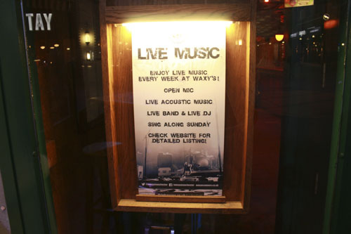

What Can You Find at Waxy O'Connors ?
Waxy O'Connors is the place to be if you love musicians with a guitar and a violin.
With spacious and comfortable seating areas close to the musicians, you can choose to sit or even get up for a dance as the wonderful musicians play their music.
Great music, great drinks, great food and great musicians is what youll find at Waxy O'Connors. Find out more by visiting their website below.
Visit Waxy O'Connors website
